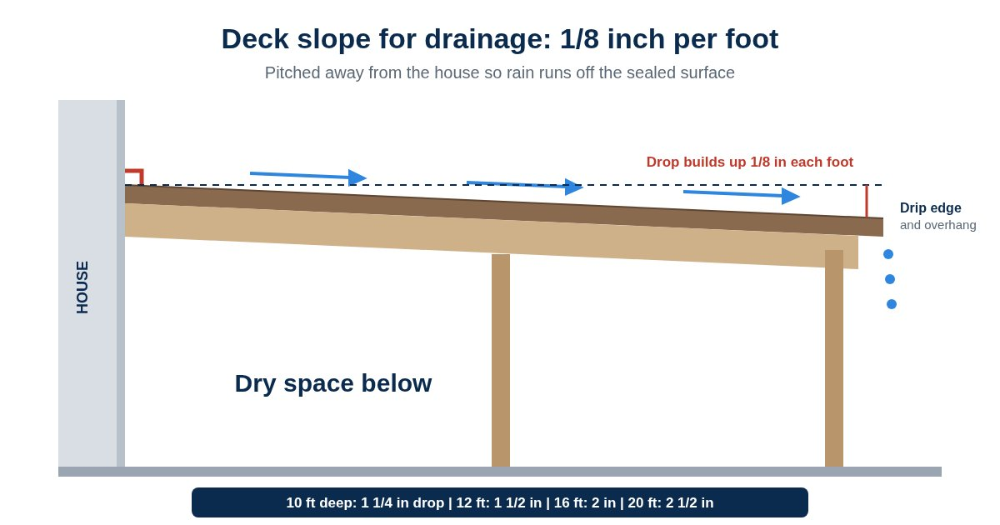

On a conventional gapped deck, most rain falls straight through the gaps between the boards. On an AmeriDex deck, the boards lock onto the Dexerdry seal, so rain stays on top and runs off the surface the way it runs off a roof. That only works if the surface has somewhere to send the water, and that is what the slope is for.
Slope an AmeriDex deck a minimum of 1/8 inch per foot, away from the house. Build it into the framing from the start, so water keeps moving off the surface and away from the wall.
What 1/8 inch per foot looks like on your deck
The drop adds up across the depth of the deck, measured from the house out to the outside edge.
| Deck depth from the house | Total drop at 1/8 inch per foot |
|---|---|
| 8 feet | 1 inch |
| 10 feet | 1 1/4 inches |
| 12 feet | 1 1/2 inches |
| 16 feet | 2 inches |
| 20 feet | 2 1/2 inches |
That is a gentle pitch. Chairs and tables sit fine on it, and most people never notice it. It is still enough to keep water moving instead of sitting on the boards.
How to check the slope on your framing
Lay a 4 foot level across the joists
Set it on the framing so it runs away from the house, the same direction the water should travel.
Lift the low end until it reads level
Raise the end farthest from the house until the bubble is centered.
Measure the gap
About 1/2 inch under a 4 foot level works out to 1/8 inch per foot. Check in a few spots across the deck, not just one.
Look for high and low spots
Plane down any joist that sits high. The framing should be flat across its width with no peaks or valleys, because flat framing is key to how well the Dexerdry seal performs.
Where the water goes once it is moving
- Off the low edge. Boards overhang the framing at the deck edges by at least 1 3/8 inch, with a drip edge cut on the underside of the board ends so water drops off instead of creeping back under.
- Into a gutter where the layout needs one. Decks with boards running away from the house get a gutter at the house, and decks wider than 20 feet get a seam gutter or a center board with a gutter on each side.
- Not toward the wall. The house is always the high side. The ledger still gets flashed, as our guide to deck ledger flashing explains.
Do
- Plan the pitch when you frame the deck
- Slope it away from the house
- Check flatness joist by joist
- Run water over the finished deck to test it
Don't
- Build it dead flat and hope
- Pitch it toward the house
- Leave high joists that create puddle spots
- Count on fixing the slope after the boards are down
Which way should the boards run?
Boards running parallel to the house, with the deck pitched away from it, is the ideal AmeriDex layout. Boards running away from the house and picture frame layouts also work, and each has its own caulking, flashing, and gutter details. Your builder can walk through those in the Dexerdry install help, and our builder's guide to installing AmeriDex covers the full sequence.
AmeriDex goes on new decks and full re-decks. On a re-deck, the old framing has to be sound and already have the right pitch. Check it with the level method above before you plan on reusing it, and read our guide to drainage for an existing deck for your options.
Frequently asked questions
How much slope does an AmeriDex deck need?
Slope the deck a minimum of 1/8 inch per foot, away from the house. Plan it when the deck is framed so rain sheds off the surface and away from the house.
How much lower is the outside edge of a 12 foot deck?
At 1/8 inch per foot, a deck that runs 12 feet out from the house drops about 1 1/2 inches from the house side to the outside edge. A 16 foot deck drops about 2 inches.
How do I check the slope on my deck framing?
Lay a 4 foot level on the framing running away from the house, lift the low end until the bubble is centered, and measure the gap under it. A gap of about 1/2 inch over 4 feet works out to 1/8 inch per foot.
Can I add slope to an existing deck?
AmeriDex goes on new decks and full re-decks. On a re-deck, the existing framing has to be sound and already have the right pitch, so have a builder check it before planning on it.
Planning a deck with a dry space below?
Getting the slope right on day one is a lot easier than fixing it later. Start a free quote and tell us about your project, request free samples to see the boards and the Dexerdry seal up close, or read how to keep the space under a deck dry for the full picture. Always follow your local code.